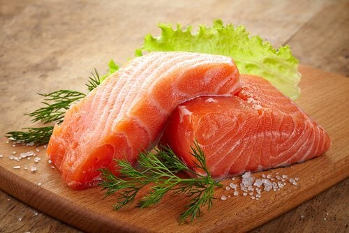
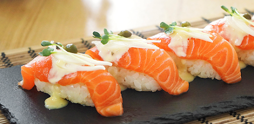
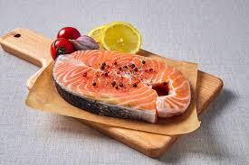

이전으로
<연어>
#효능#

- 고혈압 치료에 좋으며
심장 마비를 예방한다.
- 혈류에도 도움이 되며, 혈전 형성을 막아준다.
- 항염 효능이 있으며 근육 조직도 재생한다.
- 두뇌 건강 및 기억력 개선 효능이 있다.
#미용 효과#

- 비타민 C와 피부, 근육 및 모발 성장에 도움이 되는
비타민 E의 흡수를 촉진한다.
- 홍조 및 건선과 같은 피부 문제와 피부암을 예방한다.
- 조기 피부 노화에 좋은 항염 물질이 포함되어 있다.
#다양한 연어 요리#

